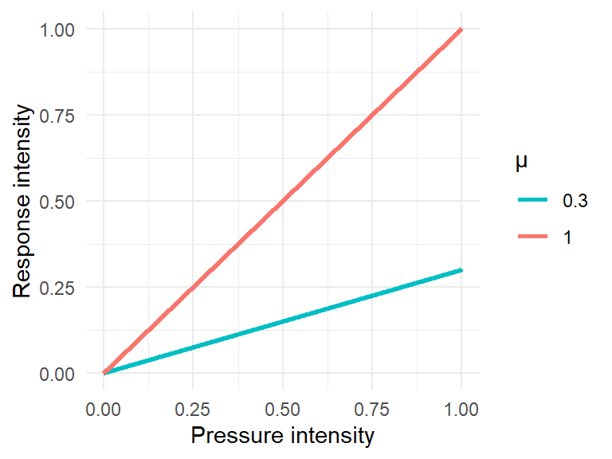
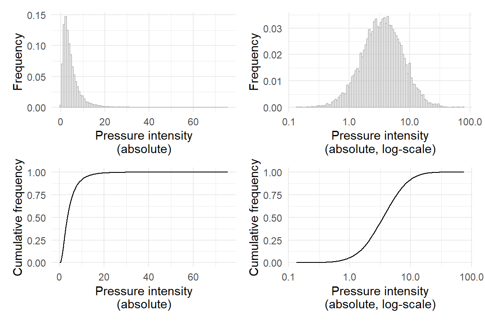
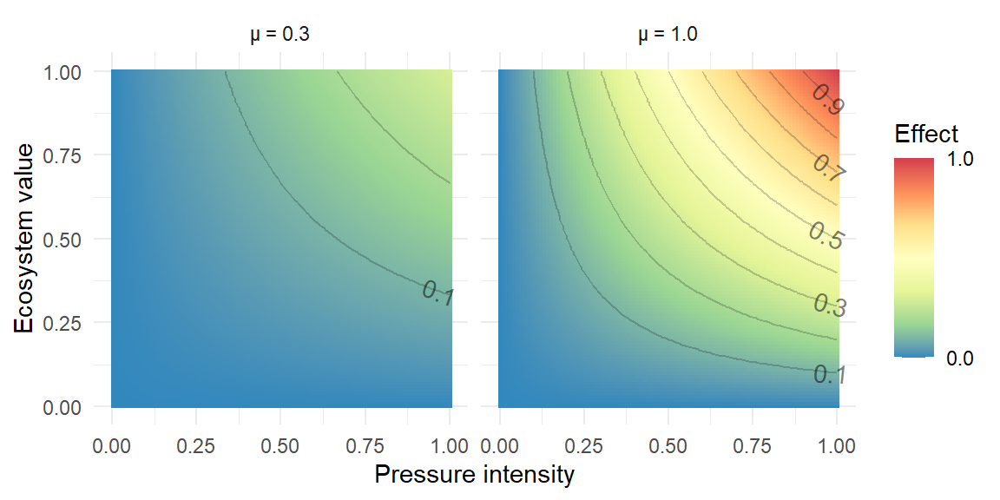
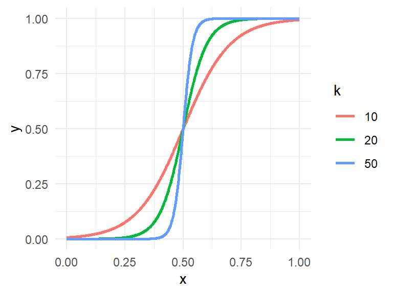
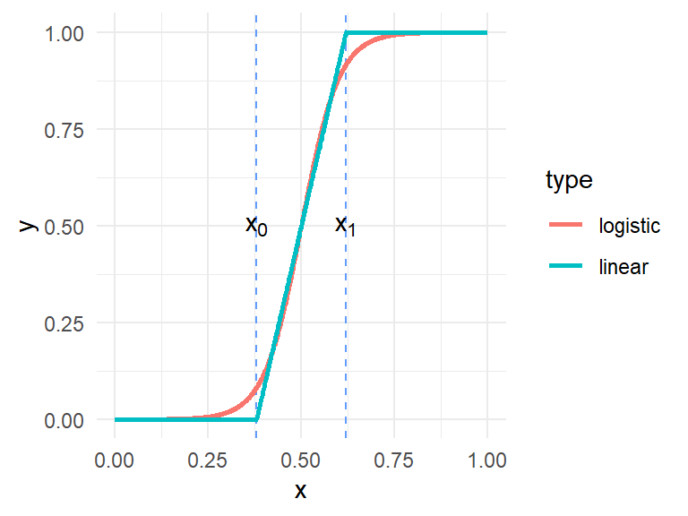
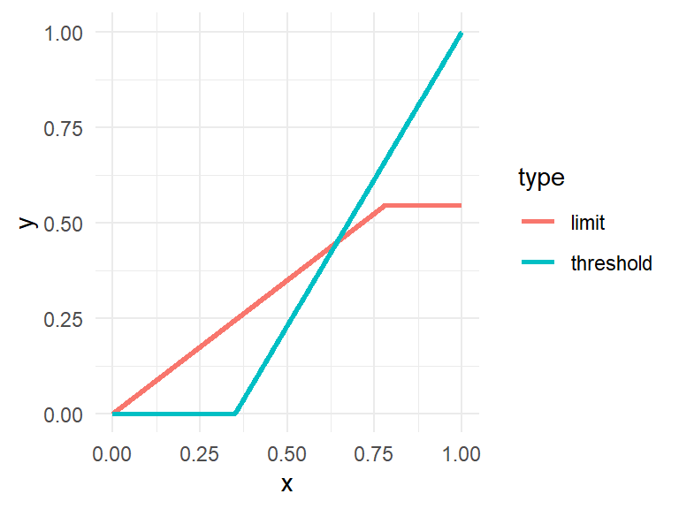

Response curve, threshold, tipping point models
Introduction
This aim of the this document is to catalogue and describe the forms of models which we envisage for inclusion in the GES4SEAS toolbox.
At present we are working with two main types of tools:
- status assessment
- combined (or cumulative) effect (or impact) assessment
Status assessment
This form of tool aims to determine the absolute condition of the ecosystem i.e. for example is the state good or not good. There are many examples of this kind of tool. The GES4SEAS toolbox implements one of these - the NEAT tool. This is a flexible tool which can makes use of a wide variety of indicator parameters at differing spatial resolutions.
More on other tools and indicator-based status assessments…
Cumulative effect assessment
This form of tool provides a quantitative measure of the combined effects on ecosystems of the pressures resulting from many types of human activity. This can indicate how the combined effects vary spatially and show that they are relatively higher in one location or region than in another. They do not at present predict status or health of ecosystems based on the levels of pressure intensity.
more info…
Unified assessment tools
The ultimate aim of assessment tools is to guide the management of human activities so that the effects of the resulting pressures on ecosystem health are kept within limits which prevent the deterioration of healthy ecosystems and which allow those ecosystems not in a healthy state to recover.
To that end, the similar goals of (i) being able to predict the resulting state of ecosystems given a set of pressures or (ii) to quantify necessary reductions in pressures required to ensure the maintenance of or return to good status in ecosystems would both require linkages between pressure levels and ecosystem health.
Comment on the extent to which this is possible…
Response models
Simple linear responses
One pressure one ecosystem component
Ignoring spatial resolution for a moment, if we consider the effects resulting from a number of normalised pressures acting on ecosystem components then the effect \(I_{ij}\) resulting from pressure \(j\) acting on the ecosystem component \(i\) is:
\[ I_{ij} = D_i *e_j * µ_{ij} \tag{1}\]
where:
\(D_i\) is the intensity of pressure \(i\)
\(e_j\) is the quantity or level of ecosystem \(j\)
\(µ_{ij}\) is the sensitivity of ecosystem component \(j\) to pressure \(i\)
Figure 1 shows how the estimated effect varies with increasing pressure intensity for two different values of sensitivity \(µ\).
Multiple pressures and ecosystem components
Considering the pressure intensities and ecosystem component levels as spatially varying on a 2-dimensional grid with coordinates \(x, y\) and summing the effects for n pressures and m ecosystem components in each grid cell, we have the simplest (sum) form of the Halpern et al assessment ref?:
\[ I_{sum}(x,y) = \sum_{i=1}^{n}\sum_{j=1}^{m}{D_i(x,y) *e_j(x,y) * µ_{ij}} \tag{2}\]
Similarly to Equation 1:
\(D_i(x,y)\) i the intensity of pressure \(i\) in the grid cell \(x,y\)
\(e_j(x,y)\) is the quantity or level of ecosystem \(j\) in the grid cell \(x,y\)
\(µ_{ij}\) is the sensitivity of ecosystem component \(j\) to pressure \(i\)
By normalising the sum of effects to the ecosystem diversity, we obtain the (mean) version of the Halpern et al assessment:
\[ I_{mean}(x,y) = \sum_{i=1}^{n}\sum_{j=1}^{m}{\frac{1}{E_{div}(x,y)}}{D_i(x,y) *e_j(x,y) * µ_{ij}} \tag{3}\]
where \(E_{div}\) the ecosystem diversity index is given by:
\[ E_{div}(x,y) = \sum_{j=1}^{m}e_j(x,y) \tag{4}\]
Normalisation of pressure intensities and ecosystem component quantities
The simplest form of quantification of an ecosystem component or a pressure is a simple presence/absence - assigning a \(0\) or \(1\) value.
…
A comparison of the products of noise intensities (dB) and population counts with the products of nutrient concentrations and dimensionless quality indices is not meaningful. We need to transform the observed quantities onto some comparable scales.
Figure 2 shows the distribution of intensity, as absolute values, for a pressure across an area of interest. This could be, for example, the distribution of all values in the raster grid cells of a data layer representing concentration of a nutrient [mg l-1].

Figure 2 shows….
We can normalise the pressure intensities by log-transforming them and rescaling from \(0\) to \(1\):
\[ D^{'} = \frac{ln(D+1) - ln(D_{min}+1)}{ln(D_{max}+1)-ln(D_{min}+1)} \tag{5}\]
Alternative methods include truncation at percentile values (e.g, 99th) to exclude outliers, before log-transformation and rescaling:
\[ D^{'} = \frac{ln(D+1) - ln(D_{1\%}+1)}{ln(D_{99\%}+1)-ln(D_{1\%}+1)} \]
Product of ecosystem and pressure
There is a linear relationship between the pressure intensity, \(D\) and the estimated effect \(I\). This assumes a given ecosystem level value \(e\). For a given pressure intensity, \(D\), there is also a linear relationship between the ecosystem level value \(e\) and the effect.
The variation in effect with pressure intensity and ecosystem value can be shown in a heat map.

Non-linear responses
Logistic functions
The generalized logistic function can be written:
\[ f(x)=\frac{L}{1+e^{-k(x-x_0)}} \tag{6}\]
For the case where \(L=1\), the function varies between \(0\) and \(1\). Figure 4 shows the function for \(x_0=0.5\) and for 3 different values of \(k\):

The logistic function can be approximated by a piece-wise linear function with two fixed points. For general case where \(y\) can vary outside the range \(0-1\), the equation can be written:
\[ f(x)=\begin{cases} y_0, & x \le x_0 \\ y_0 + {(y_1 - y_0) (\frac{x - x_0}{x_1 - x_0} )}, & x_0 \lt x \le x_1 \\ y_1, & x \gt x_1 \end{cases} \]
For the case where \(y\) varies in the range \(0-1\):
\[ f(x)=\begin{cases} 0, & x \le x_0 \\ \frac{x - x_0}{x_1 - x_0}, & x_0 \lt x \le x_1 \\ 1, & x \gt x_1 \end{cases} \tag{7}\]
Figure 5 shows how the logistic function for \(k=20\) can be approximated by a piece-wise linear function.

more….
Thresholds
By selecting the appropriate parameters, piece-wise linear functions can be used to represent other functional relationship, including thresholds, where a pressure has no effect below a certain intensity or where its effect does not increase above a certain limit:

more…
Other non-linear responses
Other forms of non-linear response can be similar to a logarithmic function within a specific range. For example, looking again at Figure 4, we can see that an exponential function \(f(x)=e^x\) resembles the growth phase of the logistic function where \(x \lt x_0\).
other examples
figures
In many cases the functions can be approximated by linear piece-wise functions. The number of segments in the piece-wise function can be increased to give a closer fit to the original function:
\[ f(x)=\begin{cases} y_0, & x \le x_0 \\ y_0 + {(y_1 - y_0) (\frac{x - x_0}{x_1 - x_0} )}, & x_0 \lt x \le x_1 \\ y_1 + {(y_2 - y_1) (\frac{x - x_1}{x_2 - x_1} )}, & x_1 \lt x \le x_2 \\ ... \\ y_{n-1} + {(y_{n} - y_{n-1}) (\frac{x - x_{n-1}}{x_{n} - x_{n-1}} )}, & x_{n-1} \lt x \le x_{n} \\y_n, & x \gt x_n \end{cases} \tag{8}\]
Multivariate responses
more…
Algorithms
The assessment methods must be converted into operational code. The GES4SEAS toolbox uses the tcl programming language but the algorithms can be generalized and written in many different languages. The examples here are written in R:
No spatial interactions
With many data layers and a fine spatial resolution, the computational effort can still be large but the method remains quite simple. The core calculations for the ‘Halpern’ method ( Equation 2 and Equation 3) can be written in relatively few lines of code.
Since there is no spatial interaction, each 2-dimensional grid cell can be assigned an id number. All 2-dimensional arrays then be arranged as 1-dimensional lists. After calculations are completed the position in the list can be used to retrieve information about the grid cells and convert the 1-dimensional results back to 2-dimensional maps.
# p[i, k] # pressure intensity for pressure i in grid cell k
# ec[j, k] # ecosystem level for component j in grid cell k
# mu[i, k] # sensitivity of ecosystem component j to pressure i
# I_sum[k] # the sum of effects in grid cell k
# I_mean[k] # the sum of effects in grid cell k normalised to E_div
# E_div(k) # the ccosystem diversity in cell k
# loop through each grid cell
for(k in 1:length(gridcells)){
# initialise the sum of effects for this cell
I_sum[k] <- 0
# initialise the ecosystem diversity
E_div[k] <- 0
# loop through each ecosystem component
for(j in 1:length(ecosystem_components)){
# check if the ecosystem component value >0
# otherwise no calculations are required
if(ec[j,k] > 0){
E_div[k] <- E_div[k] + ec[j,k]
# loop through each pressure
for(i in 1:length(pressures)){
I_sum[k] <- I_sum[k] + p[i,k] * ec[j,k] * mu[i,j]
}
}
}
# if E_div > 0 then divide the I_sum by E_div to get I_mean
if(E_div[k]>0){
I_mean[k] <- I_sum[k] / E_div[k]
}else{
I_mean[k] <- 0
}
}The algorithm as written here is intended purely to demonstrate the simplicity of the calculation required. There is plenty of room for improvement. For example, the use of loops is quite inefficient when matrix and parallel operations could be used instead.
Spatial Interactions
This is where things begin to get more complicated…